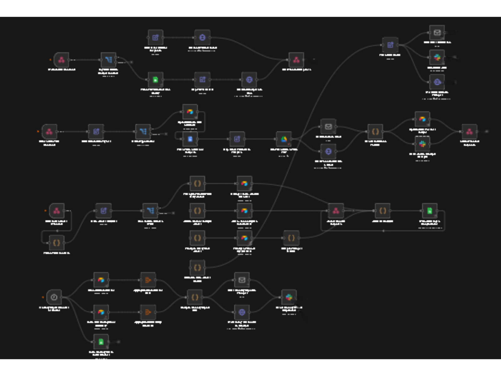

A fast-growing, boutique legal services practice specialising in direct client support and outsourced attorney services was experiencing severe operational friction. As case volumes increased, the firm's reliance on manual, fragmented administrative processes created severe daily bottlenecks. The manual handling of client intake, physical and digital file management, and uncoordinated financial tracking compromised the firm's operational speed, threatened data privacy standards, and limited executive visibility into live revenue and outstanding collections.
Streamline client onboarding and eliminate paperwork bottlenecks.
Built an automated intake workflow that captures client information, creates digital client records, organises files, and generates invoices and documents automatically.
Reduced onboarding time by 30–45 minutes per client, eliminated duplicate data entry, and improved filing consistency.
Centralise case tracking and financial management.
Developed a live dashboard to manage legal matters, track deadlines, monitor case progress, and automate all record keeping — including staff commission calculations.
Reduced administrative workload, improved financial visibility, and eliminated the risk of missed deadlines.
Strengthen data security and improve cash flow management.
Implemented restricted access controls to protect sensitive client information and automated payment reminder workflows for overdue accounts.
Enhanced client confidentiality, supported compliance requirements, and improved debt collection through automated follow-ups.
